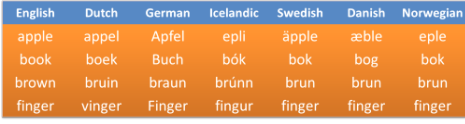
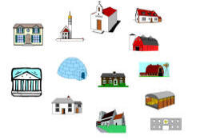
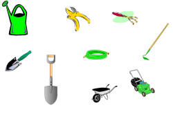

Teaching and remembering lexis

You'd be wise to work through the guides to meaning and the guide to lexical relationships before you follow this guide.
 |
Other languages |
Much is made of things like false friends and the fact that your learners' first languages may interfere with their ability to acquire lexis in English. To an extent, that is true. For learners with an Indo-European language spoken in Europe or ex-European colonies in other continents (i.e., excluding the Indo-Iranian branch), however, there are many more true friends than false.
Cognate words

Words which have a common origin and, therefore, look, sound and mean
alike are called cognates (from the Latin cognatus (blood
relation)).
True and false friends are often cognate words. For example, the English word
night has cognates in French (nuit), German (Nacht), Dutch
(nacht), Swedish (nat), Polish (noc), Spanish (noche) and so on
and these are all true friends because meaning is unchanged.
 |
True friends |
Briefly, the list of languages with many true friends will include:
- The Italic languages: French, Spanish, Portuguese, Italian,
Romanian etc.
There are many words, especially those of Latin, Greek or Norman-French origin which will be recognisable in English to speakers of these languages. These particularly occur in technical and 'intellectual' areas but also include large numbers of very common words.
Speakers of these languages sometimes show a tendency to select familiar, cognate words rather than the more stylistically appropriate English words so we get
I entered the house and extinguished the fire
instead of
I went in and put the fire out
which is also neatly avoiding the phrasal verb, of course. - Germanic languages fall into two categories with similar
vocabularies (and much else). North Germanic or Scandinavian
languages and West Germanic languages which include English, Dutch
and German as well as a host of small dialects and languages.
There are many thousands of cognate words across these languages. Many of these words refer to some of the most basic concepts such as land, day, hand, old, young, many, good, glass, gold etc. The languages also share scientific and 'scholarly' terms. - Slavic languages exhibit far fewer recognisable cognate words (although there are, in fact, very many hidden by orthographic and phonological changes over the centuries). Recognisable words in English for speakers of these languages will mainly be scientific and scholarly terms of the sort shared by other European languages. These languages are also rich in borrowings from English.
Other languages (i.e., most of them) will not exhibit any significant overlap in lexemes. The implication is clear: learners from most language backgrounds will encounter significantly more difficulty acquiring English words than their more fortunate European colleagues. They will need more time, more recycling and more patience.
 |
False friends |
This is not the place to list false friends for all the languages in the world. There are numerous websites that will do that for specific languages. Another good source is The Cambridge International Dictionary of English.
It is, however, worth noting that false friends come in a range of
falseness. Many are only false friends in certain circumstances.
This includes words which are restricted to some contexts in certain
languages, e.g., angst in English is borrowed from the German
word meaning anxiety but only used in psychological senses.
It is often noted, for example, that the English word sensitive
is problematic for speakers of many European languages because of
confusion with a word similar to sensible in those languages.
However, sensibility is
used in English in the same way and refers to sensitivity of feeling.
That's how Jane Austen used it, incidentally.
The English sensibility is rendered in German as
Sensibilität but the English word sensitive may be
translated as sensibel. For example, the two words
sensitive and sensibility are translated in French as
sensible and sensibilité, in Spanish as sensible
and sensibilidad and in Italian as sensibile and
sensibilità.
There is a separate guide to
cognates and false friends on this site, linked at the end of this guide.
There are also some exercises on this site concerning false friends in the
section for learners.
Click here to go there.
Storing and remembering words |
You are going to see three sets of pictures. For each, write
down a one-word description.
Click when you are ready.
|  |  |
 |
What did you have? Something like
buildings, plants
flowers
(garden) tools / implements
is a good guess unless you
were deliberately quirky.
The reason nearly all people use the same categories is that this is how
we organise the universe – by use (buildings), by
appearance (plants / flowers) and by place
(garden stuff). If this is true, it seems logical to teach sets of
words in ways which cater for these sorts of categorisation. Now
is not the place to tell you how to do this but you need to bear it in
mind when planning to insert new lexis into lessons.
How are my learners going to remember the words?
 |
Aids to memory |
Now you are going to look at some words and try to remember them. Here's what to do:
- Show the words by clicking on the open eye symbol:

- Look at the words for no more than 10 seconds
- Click on the closed eye symbol and try to write as many as you can remember.
OK? Here's Set 1
Click when ready:

sespink, dunkannage, winjeris, floosbendy, dramscumm, fint, plib, strint, flasmond
Click after 10 seconds and write the words.
Set 2

scuttlebutt, globe, computer, finalise, settee, folding, sarong, hoe, junket
Set 3

beret, bowler, topper, panama, cloth cap, fedora, fez, pork pie, trilby
Set 4

I disembarked at about 4 and took a carriage into town where I purchased a new tutu and a wig.
In theory, this task should have been
getting easier as you went along. Why should that be?
Set 1 contained nonsense words and they are harder
to remember because you have no meaning to attach to them.
Moral: we all need meaning to help us recall words. This is
what your students have to do if you don't make meaning clear.
Set 2 contained real words but with no meaning
connections between them.
Moral: disconnected words are difficult to remember.
Set 3 contained a set of hyponyms for hat.
Moral: words connected to each other because they fall in the same
set are easier to recall.
Set 4 was a short narrative with lexis embedded in
it.
Moral: words which appear in some kind of narrative are easy to
recall because of the context.
General moral: CONNECT and CONTEXTUALISE.
 |
What does it mean to know a word? |
That sounds an easy question but, apart from the simple denotational
meaning of a word, what else do we need to know about it to be sure
that we can deploy it accurately?
You have probably already thought of any connotation the word may
have in certain cultures and for certain people. What else?
When you have made some notes, click to
compare your list with
this one.
- We need to know what a word means – what it denotes and what it connotes (if appropriate)
- We need to know how it is connected to other words which mean similar things (e.g., buy, sell, bargain, discount etc.)
- We need to know what words it commonly goes with (collocation) so we know we can't have a high tree but prefer tall as the adjective, for example
- We need to know what other meanings it can have (e.g., shop, bank etc. can have different meanings and fall into different word classes)
- We need to know how the word changes depending on its grammar (e.g., shop, shops, shopping, shopped etc.)
- We need to know what grammar the words uses (e.g., does it take a direct object, an indirect object, both, a preposition, does it have an odd plural or an irregularity? etc.). In other words, we need to know about colligation.
- We need to know how to pronounce the word.
- We need to know how to spell the word.
- We need to know what kind of situations the word is used in and who might use it. Is it, for example, typical of a certain register?
We might not choose, of course, to cover all this ground with every word we introduce but we need to consider all these things when planning to focus on lexis in any lesson.
 |
Choosing what lexis to teach |
When you are deciding what to teach in terms of lexis, what factors
do you take into account?
Make a list and click
here.
- FREQUENCY – HOW OFTEN DOES IT OCCUR?
- Who decides if a lexeme is frequent? Use your intuition and/or consult an online corpus. Do your learners need words occurring frequently in a particular register? If so, then a corpus search for frequency might not help much.
- RANGE – OVER WHAT RANGE OF CONTEXTS CAN IT BE USED?
- If a word is only used in very informal or formal contexts, do your students really need it?
- COVERAGE – HOW MANY THINGS CAN IT APPLY TO?
- Clearly a common superordinate or hypernym such as vehicle can be very useful if a learner doesn't know items such as tram, minibus, coach etc.
- USEFULNESS – to your learners
- If your learners need words occurring frequently in a particular register or setting, you need to prioritise them. The lexeme Maltese is neither frequent nor very useful (unless, of course, you happen to come from / live in / want to visit Malta).
- TEACHABILITY / LEARNABILITY
- How easy is it for your learners? Is there an acceptable alternative that is easier for them? Are there grammatical issues with the word above your learners' level?
 |
Strategies for learning and remembering lexis |
A good deal of research has been done on the ways in which new
words are understood and learned. Here are some strategies
commonly used by learners divided into those which may help to
unpack the meaning of unknown items and those which may help to
consolidate learning once the meaning is known.
Some of the following are exemplified in the teaching ideas which
follow.
- Unpacking meaning

- Word class
Identifying word class is a small help to understanding meaning and a greater one in deciding whether it is important to understand the word or not and can be done in two main ways:- By using the co-text:
For example
any word which appears between a determiner and a noun is almost certainly an adjective as in, e.g.:
that horrendous storm
any word which immediately precedes or follows a verb is almost certainly an adverb, e.g.:
she promptly left
etc. - By using word shape and an understanding of affixation and
compounding. For example:
prefixes almost always change a word's meaning, e.g.:
productive → counterproductive
suffixes almost always affect word class but not meaning, e.g.:
courage → courageous
English is right-headed so the right-hand word signifies word class and meaning (usually), e.g.:
a doorman is a type of man not a type of door
a fencepost is a type of post, not a type of fence
only nouns and verbs inflect in English so, e.g.:
an -s or -es ending is either a plural noun or a verb in the third person singular and an -ed ending on a word usually signified a past tense or past participle while -ing signifies a progressive form
- By using the co-text:
- Cognates
Some cognate words are instantly recognisable but others require a little understanding of the patterns. Cognate words between languages often follow simple rules so a final 'd' in in German is often a final 'th' in English and the ending- ion in English will usually be -zione in Italian and -ção in Portuguese. - Using pictures and other graphics helps to:
- Recognise the register of a text and predict the kinds of lexis that it will contain
- Recognise how words such as, e.g., pass, score and goal are being used
- Gaining an understanding of gist by skimming a text helps to get a sense of the author's purpose and likely meanings so one is able to predict whether, e.g., adjectives are likely to be positive (as, in an advertisement, for example) or negative (as in an argument against something, for example).
- Word class
- Consolidating learning

- Personalising words to connect them to one's own experience.
- Using hyponymy and meronymy helps to fix words in terms of meaning so knowing, e.g., that both buses and cars are type of vehicles and that they both have steering wheels, tyres, windscreens and so on creates a web of associations.
- Using antonymy and synonymy can also help to fix a word's meaning by what it is similar to or not.
- Writing words down is a well-known aid to memory and writing two or more sentences to show the word's meaning is even better.
- Mentally or aloud repeating word may help to fix it in the memory.
- Organising vocabulary notebooks by categories of meaning rather than word class or spelling is effective.
 |
Some ideas for teaching lexis |
There's nothing earth-shattering here but this may remind you of some techniques and material types to use when the focus is on lexis.
 |
Focus on collocation |
Odd-one out:
| Adjective – Noun |
Tall – person,
mountain, tree, wall? Torrential – rain, water, river, downpour, snow? Rain – gentle, heavy, strong, hard, tough? Problem – large, strong, difficult, big, heavy? |
| Verb – Noun | Make / Do – homework, money, a mistake,
an effort? Catch – cold, meaning, idea, bus, lift? Path – wind, turn, twist, coil, spiral, twirl? Wage – pay, earn, settle, gain, give, achieve? |
Word grids. Students work with dictionaries and/or a text to put a X in the right boxes:
| frozen food | your heart | out | relationships | into tears | sugar | ice | chocolate | |
| thaw | X | |||||||
| melt | ||||||||
| dissolve |
Matchers. Students draw the lines and end up with something like this:

Gap fills. Students work together to see what can naturally go in the gaps:
We …………… the …………… path up the mountain until we …………… the summit.
The view was quite …………… and we …………… for over an hour just …………… it.
Selections. Students choose the right collocations:
The tasteless / foul / bright hotel
was in a dirty / unclean / polluted
alley.
The receptionist was so abusive / cruel / spiteful that we felt
undesirable / unwelcome / objectionable from the outset.
 |
Focus on inferring (not guessing) the meaning from context |
In these examples, the assumed unknown word is in red.
| There’s a really noisy bash going on next door. The music is far too loud. |
|
Students work together to decide:
So it must be a kind of gathering. |
| He has an unpleasantly raucous voice. It's like a drill. |
So it must mean unpleasant to listen to. |
| There's a really noisy party taking place next door. |
So it must mean happen. |
| The disco was so deafeningly loud it made my head ache. |
So it must mean extremely loud. |
 |
Focus on lexical field |
- Add to the list
- nurse, doctor, medicine, hospital, ambulance, ward, emergency, ...
- Spot the odd one(s) out
- wet, soaked, humid, drenched, flooded, damp, rainy
- Match the verb to the noun
- builder, nurse, teacher, detective
treat, construct, arrest, prepare - Divide the list into 2 / 3 / 4 etc.
- sweets, sugar, hammers, chocolates, nails, eggs, saws, newspapers, bacon, screwdrivers, glue, paint
 |
Focus on dealing with lexis in texts |
- Chasing down lexical chains
- Find all the words in the text that describe people
Find all the words connected to medicine
Find three words which tell you he was happy - Provide the definition and get the learners to find the words
- Find a word which means very unhappy
Find a word which means a type of house
 |
Some lighter activities |
- In the manner of
- Prepare cards with instructions such as Open the box
extremely carefully, Open the parcel frantically
Students mime to each other and try to guess the adverb. - Categories
- One student goes in the hot seat and tries to guess the category from the example. E.g., "Things that are hot". Students in the team call out examples of such things: the sun, a cooker, a cigarette, a car's engine, someone with a fever etc. Other examples: "Things that are sold in cans", "Things that are yellow", "Things that break easily".
- Pictures
- One student starts a drawing on the board and the team members guess the word as soon as they can. There are endless variations on this.
If you have recently taught a successful lesson in this area or have other ideas to share, why not send the materials to ELT Concourse? Click here to see how.
| Related guides | |
| lexis | the obvious first place to start with considerations of meaning |
| noticing | for a guide to how this key learning strategy works and how it may be encouraged |
| cognates and false friends | for the guide to some key ideas concerning lexis across languages |
| word formation | for the guide to understanding affixation |
| inferencing | for more on how learners may draw inferences |
| tense and aspect | for a link to four guides to analysing tense and aspect beginning with a consideration of meaning |
References:
Campbell, GL, 1995, Concise Compendium of the World's Languages,
London: Routledge
Proctor, P (Ed.), 1995, Cambridge International Dictionary
of English, Cambridge: Cambridge University Press
Schmitt, N, 2000, Vocabulary in Language Teaching, Cambridge: Cambridge University
Press
Swan, M and Smith, B (Eds), 2001, Learner English, 2nd Edition,
Cambridge: Cambridge University Press
Other references
for lexis and vocabulary:
French Allen, V, 1983, Techniques in Teaching Vocabulary, Oxford
University Press
Gairns, R & Redman, S, 1986, Working with Words: A Guide to Teaching
and Learning Vocabulary, Cambridge University Press
Hoey, M, 2006, Lexical Priming: A New Theory of Words and Language,
London: Routledge
Lewis, M, 1997, Implementing the Lexical Approach, Brighton,
UK: Language Teaching
Publications
Lewis, M, 2002, The Lexical Approach, Thomson ELT
Lindstromberg, S & Boers, F, 2008, Teaching Chunks of Language: From
Noticing to Remembering, Helbling Languages
McCarthy, M, 1990, Vocabulary, Oxford: Oxford University Press
Morgan, J & Rinvolucri, M, 1986, Vocabulary, Oxford: Oxford University Press
Schmitt, N & McCarthy, M, 1997, Vocabulary: Description, Acquisition
and Pedagogy, Cambridge: Cambridge University Press
Thornbury, S, 2002, How to Teach Vocabulary, Harlow: Longman